| Symbol |
Description |
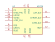
AD725 | Description: Low Cost RGB to NTSC/PAL Encoder with Luma Trap Port
Keys: Video
Datasheet: https://www.analog.com/media/en/technical-documentation/data-sheets/AD725.pdf |
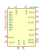
AD9708AR | Description: Video DAC (32 MHz), SOIC/TSSOP-28
Keys: DAC CNA VIDEO
Datasheet: https://www.analog.com/media/en/technical-documentation/data-sheets/AD9708.pdf |
AD9891 | Description: CCD Signal Processor, 20MHz 10bits, CSPBGA-64
Keys: CCD Signal Processor
Datasheet: https://www.analog.com/static/imported-files/data_sheets/AD9891_9895.pdf |
AD9895 | Description: CCD Signal Processor, 30MHz 12bits, CSPBGA-64
Keys: CCD Signal Processor
Datasheet: https://www.analog.com/static/imported-files/data_sheets/AD9891_9895.pdf |
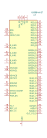
AD9984AKST | Description: High Performance 10-Bit Display Interface 140/170MSPS LQFP
Keys: 10bit video display interface
Datasheet: http://www.analog.com/media/en/technical-documentation/data-sheets/AD9984A.pdf |
AV9173 | Description: Video Genlock PLL
Keys: video pll
Datasheet: http://www.ibselectronics.com/ibsstore/datasheet/Others/AV9173-01CN08.pdf |
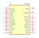
CX7930 | Description missing |
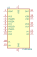
CXD3400N | Description: 6-channel Vertical Clock Driver for CCD Image Sensor, SSOP-20
Keys: CCD Clock Driver
Datasheet: video\cxd3400n.pdf |
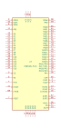
HD63484 | Description missing |
HD63484_PLCC | Description missing |
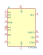
ICX415AQ | Description: Diagonal 8mm B/W Progressive Scan CCD Image Sensor with Square Pixel, CERDIP-22
Keys: CCD B/W Image Sensor
Datasheet: None |
LM1881 | Description missing |
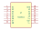
MAX310 | Description: 8-Channel CMOS RF Video Multiplexer
Keys: video rf
Datasheet: https://datasheets.maximintegrated.com/en/ds/MAX310-MAX311.pdf |
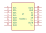
MAX311 | Description: 8-Channel CMOS RF Video Multiplexer
Keys: video rf
Datasheet: https://datasheets.maximintegrated.com/en/ds/MAX310-MAX311.pdf |
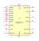
MB88303P | Description missing |
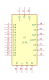
S178 | Description missing |
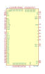
SAA7182 | Description: Digital Video Encoder, Obsolete
Keys: Video Encoder
Datasheet: http://rcl-radio.ru/wp-content/uploads/2014/11/SAA7182.pdf |
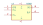
SI582 | Description missing |
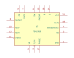
TDA1950 | Description missing |
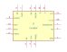
TDA1950F | Description missing |
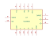
TDA2593 | Description missing |
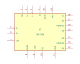
TDA7260 | Description missing |
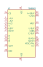
TDA8501 | Description: PAL/NTSC Encoder, RGB or Y/Y-R/Y-B Inputs, DIP/SOIC-20
Keys: Video Encoder
Datasheet: https://assets.nexperia.com/documents/data-sheet/TDA8501.pdf |
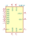
TDA8702 | Description: 8bit Video DAC (32 MHz), DIP-16
Keys: DAC CNA VIDEO
Datasheet: philips/tda8702.pdf |
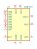
TDA8702T | Description: 8bit Video DAC (32 MHz), SOIC-16
Keys: DAC CNA VIDEO
Datasheet: philips/tda8702.pdf |
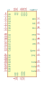
TDA8772 | Description: Triple 8bit Video DAC, QFP-44
Keys: Video DAC Colour 8bit
Datasheet: http://www.pa0qy.nl/pdf/TDA8772.PDF |
TDA9500 | Description missing |
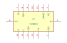
TDA9503 | Description missing |
TDA9513 | Description missing |
TEA2014 | Description: Video switching circuite for TV, DIP-8
Keys: Video switching circuite for TV
Datasheet: http://pdf1.alldatasheet.com/datasheet-pdf/view/123244/STMICROELECTRONICS/TEA2014.html |
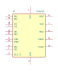
TEA5115 | Description missing |
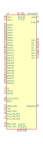
TFP410PAP | Description: Digital Visual Interface Compliant PanelBus Digital Transmitter, HTQFP-64
Keys: DVI Encoder Driver
Datasheet: http://www.ti.com/lit/ds/symlink/tfp410.pdf |